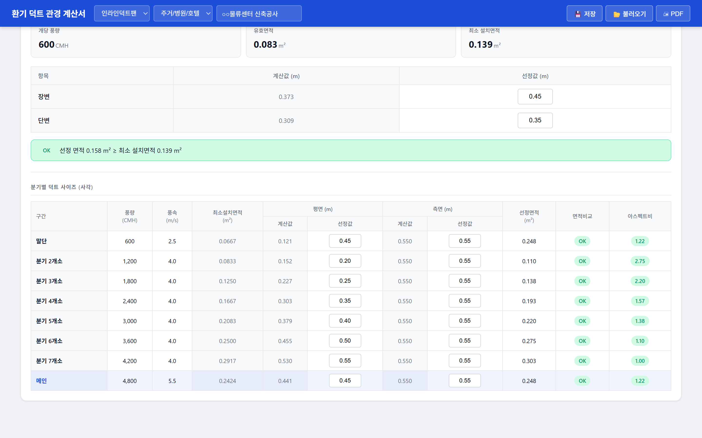

환기 덕트 관경 계산서
사각이든 원형이든, 분기가 몇 개든. 실의 풍량과 풍속만 정하면 덕트 사이즈와 레지스터·디퓨져까지 이어서 산정됩니다.
선도표와 환산표가 계산 로직 안에 들어 있습니다.
무엇이 대체되나
사각덕트
실별 계산풍량과 레지스터 개수를 넣으면 개당 풍량이 자동으로 잡히고, 개구율을 반영한 유효면적에서 최소 설치면적이 나옵니다. 선정값을 넣는 즉시 OK / 부족 판정이 뜹니다. 취출구 · 말단 · 분기 · 메인 풍속은 용도에 맞게 바꿀 수 있습니다.
🔍 클릭하면 크게 볼 수 있습니다
용도별 권장 풍속
4개 유형
주거 · 사무 · 상업 · 공장
설치 가능 높이
먼저 반영
천장 속에 들어가는지 즉시 판정
구간별 산정
구간마다 풍량 · 풍속 · 최소설치면적 · 평면/측면 치수 · 선정면적이 한 표에 정리됩니다. 면적비교와 아스펙트비가 함께 표시되어 무리한 편평 덕트를 미리 걸러냅니다. 분기 풍량이 바뀌면 전 구간이 함께 갱신됩니다.

🔍 클릭하면 크게 볼 수 있습니다
구간 구분
말단 · 분기 · 메인
누적 풍량 자동 반영
적정성 확인
면적 · 아스펙트비
구간마다 표시
원형덕트
사각으로 잡아둔 조건 그대로 원형덕트 결과를 볼 수 있습니다. 등가지름 환산표를 따로 찾을 필요가 없습니다. 현장 조건에 따라 두 방식을 비교하고 유리한 쪽으로 결정하면 됩니다.
🔍 클릭하면 크게 볼 수 있습니다
사각 ↔ 원형
탭 전환
입력은 한 번만
디퓨져 선정
함께 산정
개당 풍량 기준
작동 모습
연출된 시연 장면입니다. 실제로 계산해 보려면 무료로 바로 쓰기.